A Flag Without a Flag
One Piece, Sun Wukong and the youth rebellion in Nepal
A paper for CARI, South Asia Working Group · Dr. Federico Andino · Vajrakula · MMXXVI
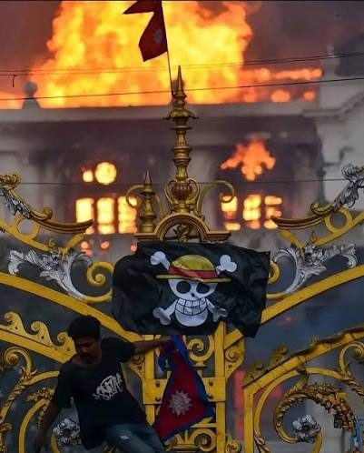
9 September 2025
Singha Durbar burns, a protester hangs the flag on its gates, and Prime Minister K. P. Sharma Oli resigns.
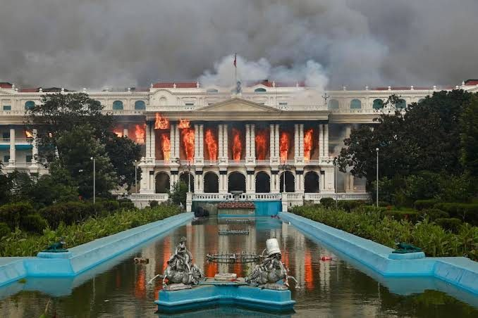
48 hours
was all it took to bring down the government.
76 dead
was the toll of the revolt, according to Reuters.
Triggers: the ban on social media, anger at corruption and at the “nepo babies”.
The thesis in one sentence
In 2026, Sun Wukong resonates among young people around the world as a pilgrim, not as a usurper.
Soft power from below
A symbol with no state sender turns against the governments of those who take it up.
A Wukong – Goku – Luffy genealogy
Individual will meets its limit and is transformed into collective liberation.
Ambedkar + Žižek
Social Buddhism and the “day after” test, which the outcome in Nepal allows us to apply.
Why could a symbol with no state sender work as a transnational political vocabulary?
Why that symbol and not another?
Roadmap
Soft power as a theory with a sender
Nepal and the circulation of the Jolly Roger
The Wukong – Goku – Luffy genealogy
Reading with Ambedkar
Reading with Žižek
Consequences for International Relations
Getting what you want through attraction, not through coercion or payment.
Joseph Nye, 2004
Its sources: a country’s culture, its political values and its foreign policy.
Sender
An identifiable actor who projects.
Audience
Receives the projection.
Attraction
Preferences favorable to the sender.
The canonical example: Japan. The state strategy Cool Japan turned manga and anime into a foreign-policy resource (McGray, 2002).
The Mugiwara Jolly Roger breaks that scheme on every axis: there is no sender.
Dimension
Classic soft power (Nye)
The Mugiwara Jolly Roger
Sender
A state projecting its culture
None: Japan did not intervene; it is the product of a private publisher
Intention
Deliberate
Absent at the origin; deliberate only in whoever appropriates it
Direction
From the top down
From the bottom up and among peers
Dimension
Classic soft power (Nye)
The Mugiwara Jolly Roger
Political effect
Preferences favorable to the sender
Delegitimization of the protester’s own government
Control of meaning
The sender’s
Whoever raises the flag’s, who adapts it to each protest
State role
Promoter
Repressor: Indonesia went as far as calling it “treason”
Cohort repertoire
One Piece has been published since 1997, and Generation Z grew up entirely online, among memes, anime and global franchises.
Legibility and adaptability
The emblem is recognized at once and admits different local meanings in each protest.
Cost of repression
Because it comes from popular culture, it is hard to suppress without looking authoritarian.
Solidarity without ideology
A shared reference is enough; no party militancy is needed.
The missing category in International Relations: a soft power from below.
8 Sep 2025
Protests against the social media ban and against corruption; police repression.
9 Sep 2025
Singha Durbar burns, the flag hangs from its gates and Prime Minister Oli resigns.
12 Sep 2025
Sushila Karki is sworn in as interim prime minister; Parliament is dissolved and elections are called.
5 Mar 2026
The Rastriya Swatantra Party, three years old, wins 182 of 275 seats.
27 Mar 2026
Balendra Shah, 35, a former mayor of Kathmandu, is sworn in as prime minister.
130,000+
server members (other sources: 145,000–160,000)
7,586
votes out of about 154,300 members
< 5%
of the members voted
> 50%
for Karki in the poll of 10 September
What it was
A server of the NGO Hami Nepal, used to organize the marches of 8 and 9 September.
Fact-checking channels, emergency support and logistics.
Polls to draw up the shortlist: Karki, Balendra Shah, Sagar Dhakal and Kulman Ghising.
The limits of the procedure
Anonymity allowed people to vote more than once.
Only Hami Nepal moderators could write in the main channels.
No state backing: an improvised, temporary and fragile digital democracy (in contrast to Estonia).
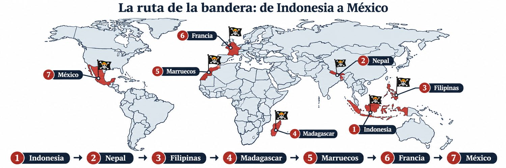
Oct 2023
Yogyakarta · First recorded use, at a protest over Gaza.
Feb–Jul 2025
Indonesia · Student and truckers’ protests against Prabowo’s government.
Aug 2025
Indonesia · Criminal threats before Independence Day; death of Affan Kurniawan.
Sep 2025
Nepal and elsewhere · The Philippines, France, Slovakia, Madagascar and in front of the UN.
Oct 2025
Morocco · Protests over public health.
Nov 2025
Mexico · The 15 November march with One Piece flags.
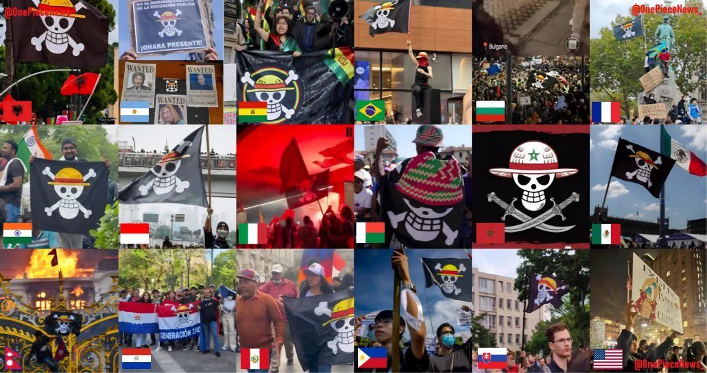
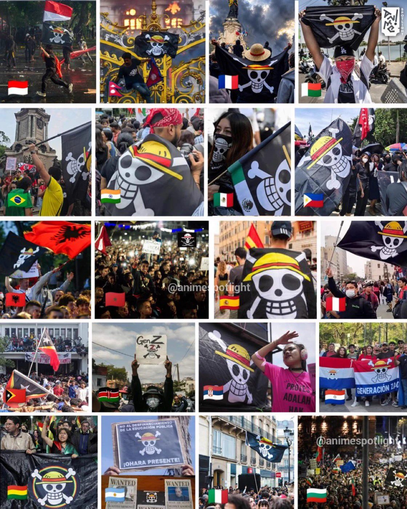
Each protest filled the emblem with a different grievance.
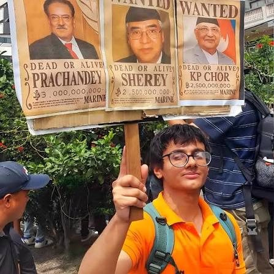
Nepal
Political dynasties and youth unemployment
Indonesia
Patriotic rituals emptied out by corruption
Madagascar
Basic services: water and electricity
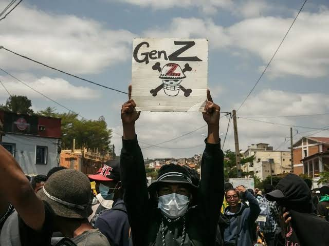
Morocco
Public health
That plasticity makes it a transnational signifier, and also exposes it to being captured by other projects.
Born from a stone, he sows chaos in Heaven (Journey to the West, chapters 1 to 7).
The court offers him a minor post; he judges it unworthy and proclaims himself “Great Sage Equal to Heaven”.
He defeats the celestial armies, but loses a wager with the Buddha: 500 years under the Mountain of the Five Elements.
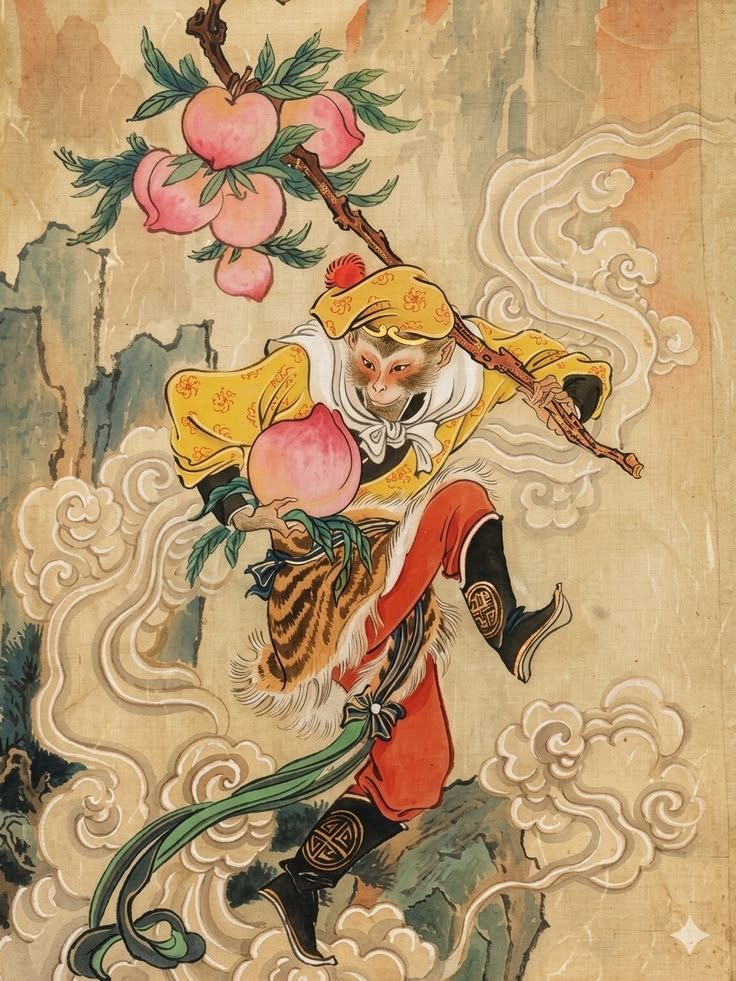
Guanyin recruits him to accompany the Tang monk to India; the circlet will tame his unruly heart.
His strength is turned to the pilgrimage, on behalf of all beings.
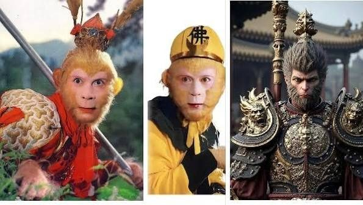
Sun Wukong
Son Goku
Monkey D. Luffy
Trait
Sun Wukong
Son Goku
Monkey D. Luffy
Work and year
Journey to the West (1592)
Dragon Ball (1984)
One Piece (1997)
Authority he faces
The celestial court
Cosmic threats rather than a political order
The World Government
Limit of the self
Crushed by the Buddha’s hand
Defeats at the hands of superior rivals
Defeats that can only be reversed with the crew
Collective way out
The pilgrimage on behalf of all beings
The Genki Dama
The crew and the liberated peoples
Impermeable authority
Heaven, the World Government, a Nepali elite that flaunts its luxury.
Failure of the self
Individual will meets its limit: Wukong under the mountain, Luffy without his crew.
Collective action
Pilgrimage, Genki Dama, crew: the rebellion resolves itself as the liberation of all.
A reading, not an emic datum
No protester invokes Sun Wukong: they invoke Luffy. The strength of the genealogy lies in the structure that is recognized, not in their knowing Wukong.
Nepal, at real scale
A personal outrage over the “nepo babies” became, in 48 hours, a mass capable of toppling a government.
Chile, 2011
Documented political use
The “Genkidama for education”: students raised their hands to gather energy and reframed their conflict with the government. By presenting themselves as fans, they opened participation to less politically defined identities.
Venezuela
Reception
A thesis on how young people conceive of the hero in Goku (2015): useful for reception, not for political use.
Argentina
Roots and identity
Dragon Ball Z arrives in 1998 on Magic Kids and forms an otaku culture. A case of political use is still missing.
A resonance of place, not an argument
On 20 November 1956, in Kathmandu, Ambedkar delivered Buddha or Karl Marx. He died fifteen days later. Almost 69 years on, a pirate flag hung from the gates of power in that same city.
Suffering has a social form
If by misery one reads exploitation, the Buddha is not far from Marx.
A nonviolent, democratic method
He shares with Marx the aim of abolishing suffering, but rejects the dictatorship of the proletariat.
Concern for youth
He feared that the young of Buddhist countries would take Marx as their only prophet. The Generation Z of 2025 chose a pirate.
The reading
Navayana: a Buddhism oriented to social emancipation.
Bahujan hitaya, “for the welfare of the many”: the Dhamma as collective ethics, not as individual retreat.
The pilgrimage is not an escape from the world: it is the conversion of an unmeasured force into service to others.
The limit
Ambedkar rejected the supernatural, hierarchical reading of Buddhism.
In the novel, the Buddha is a sovereign who crushes the rebel and controls him with a circlet.
An Ambedkarite reader would see a domestication, not a liberation.
The objection is productive, and it is the one Žižek takes up.
1 · The empty signifier
The Jolly Roger gathers heterogeneous demands without imposing a program on them: a chain of equivalences (Laclau, 2005). What matters is who fills the empty place once the street clears.
2 · The flag that profanes the flag
In Indonesia, the national flag was “too sacred” to fly in a corrupt system, and a cartoon emblem replaced it: it keeps the form of the sign of sovereignty and empties it of nation.
3 · Buddhism as ideological supplement
Žižek (2001): Western Buddhism lets one take part in the dynamics of capitalism while keeping the appearance of sanity. A Wukong of inner peace would leave the system intact.
The thesis must defend an Ambedkarite Wukong, not a Wukong of spiritual retreat.
The circlet as ideology
The device Guanyin hands over to tame Wukong works as a portable authority.
Is the pilgrimage liberation or capture? Does the rebel, on “collectivizing”, end up integrated into the order he once challenged?
The rebel who wants to be the master
Lacan to the students of 1968, in Žižek’s citation: what you seek as revolutionaries is a master, and you will get one.
The Wukong of chapter 7 claims the throne within the structure of Heaven: his desire is narcissistic.
Occupying the master’s place leaves that place intact.
That is why the thesis defends the pilgrim, not the usurper.
5 Mar 2026
First election after the protests
182 of 275
seats for the Rastriya Swatantra Party, three years old
27 Mar 2026
Balendra Shah, 35, is sworn in
A year after the uprising (The Diplomat)
A movement built on rejecting the old order came to power without knowing how to build the institutions that would replace it.
Protests returned after the death of a 25-year-old driver in a crash with the municipal police.
The youth who led it appear divided.
A nuance
It is not wise to equate movement and government: many of those who drove the protest remain outside institutional politics.
Did the rebellion limit itself to occupying Heaven, or did it build the pilgrimage?
Brazil, October 2026
Runoff Lula – Flávio Bolsonaro (25 October), won by Lula. Mugiwara flags at Lula campaign rallies and a Lula–Luffy photomontage with more than 33,000 likes.
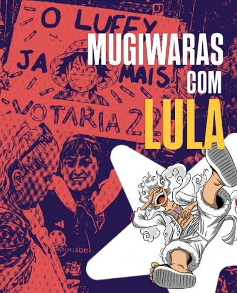
Argentina
Against the government at an education march (“¡Ohara presente!”), but another analysis warns that many users may have voted for Milei.
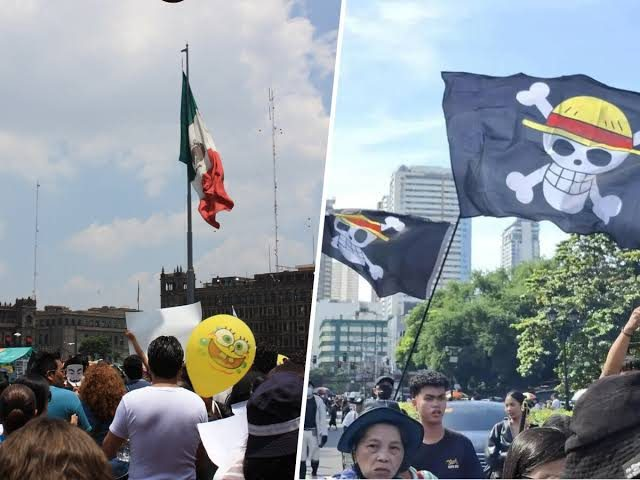
Mexico
The 15 November 2025 march with One Piece flags: public doubts about who was behind it.
A Žižekian reading: the empty place was filled, and by a candidate in office.
Soft power without a sender
The chain runs through three countries and no state directs it: a sixteenth-century Chinese novel, a Japanese manga of the eighties and another of the nineties. Cool Japan did not control its political use.
Diffusion of repertoires
Tarrow (2011): forms of collective action spread among movements. Here the diffusion is horizontal and digital, with no transnational organization.
A drawing as an existential threat
Indonesian officials spoke of “treason” and removed flags and murals (Buzan, Wæver and de Wilde, 1998). Amnesty answered: it is freedom of expression.
Ambivalence and capture
An empty signifier is not emancipatory by nature: the flag without a flag can carry any cause.
Soft power can operate from below
The Jolly Roger circulated with no state sender and turned against specific governments: a limit case for Nye.
The genealogy is structural, not emic
Protesters invoke Luffy, not Wukong; what unites them is a structure of three hinges.
Ambedkar and Žižek correct each other
The Ambedkarite Dhamma protects the thesis from the critique of Buddhism as ideological supplement; Žižek protects it from reading liberation as recuperation.
The day after is the test
Toppling a government is not enough: the “flag without a flag” is a promise that is only verified in the construction that follows.
Code
Protesters’ statements (such as those in NPR and CNN) according to three tropes: impermeable authority, insufficiency of the self and collective way out.
Compare
Contexts where the flag appears with others where it does not.
Trace
Explicit mentions of Wukong or Goku on social media.
Pending agenda
To show, with speeches and reception work, that the structure of Wukong organizes this generation’s experience, and to examine when the symbol is captured by projects opposed to collective liberation.
Theory and primary sources
Ambedkar, B. R. (1956). Buddha or Karl Marx. Lecture, Kathmandu.
Ambedkar, B. R. (1957). The Buddha and His Dhamma.
Buzan, B., Wæver, O. and de Wilde, J. (1998). Security: A New Framework for Analysis. Lynne Rienner.
Jenkins, H. et al. (2016). By Any Media Necessary. NYU Press.
Laclau, E. (2005). On Populist Reason. Verso.
McGray, D. (2002). Japan’s Gross National Cool. Foreign Policy, 130.
Nye, J. S. (2004). Soft Power. PublicAffairs.
Tarrow, S. (2011). Power in Movement (3rd ed.). Cambridge UP.
Wu Cheng’en (c. 1592). Xiyouji. Trans. A. C. Yu.
Žižek, S. (2001). From Western Marxism to Western Buddhism. Cabinet, 2.
Goku, Dragon Ball and key press
Álvarez Gandolfi, F. (2015). La Trama de la Comunicación, 19(1).
Álvarez Gandolfi, F. and Del Vigo, G. A. (2021). apropos, 7.
Díaz Ramos, I. and Díaz Maingon, R. (2015). GOKU y el heroísmo japonés en Venezuela. UCV.
García Agustín, Ó. and Aguirre Díaz, F. J. (2014). The GenkiDama for education by Chilean students. Journal of Language and Politics, 13(4).
NPR (5 Oct 2025). Why Gen Z protesters worldwide are flying an anime pirate flag.
Fortune (24 Sep 2025). Generación Z y la bandera de One Piece.
Reuters via Citizen Digital (27 Mar 2026). Swearing-in of Balendra Shah.
The Diplomat (Sep 2026). A Year After Nepal’s Gen Z Uprising.
Tech Policy Press. Nepal’s Gen Z Used TikTok and Discord.
Occupy Heaven, or build the pilgrimage?
Questions and discussion
Dr. Federico Andino · fedeandino.com
A Flag Without a Flag · Vajrakula · A school of Vajrayāna